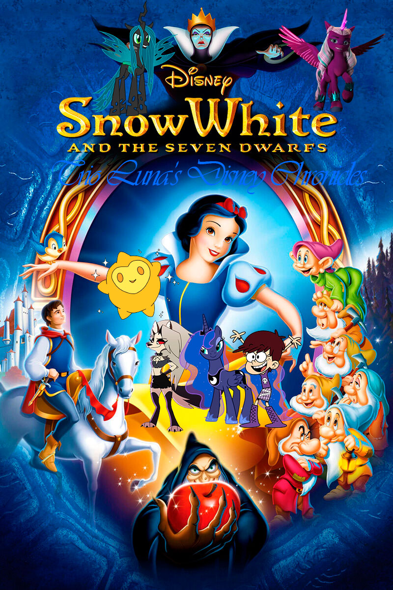

The Disney Chronicles I: Snow White and the Seven Dwarfs

Argumento
Sigue a Trio Luna junto con Estrella en sus nuevas aventuras y amistad.
Descubre cómo conocen nuevos amigos y luchan contra villanos aterradores. Empezando por El que lo empezó todo.
Curiosidades
Esta es la primera aventura basado en el primer clásico de Disney.
La Reina Chrysalis y Opaline Arcana se aliaran con la Reina Grimhilde.